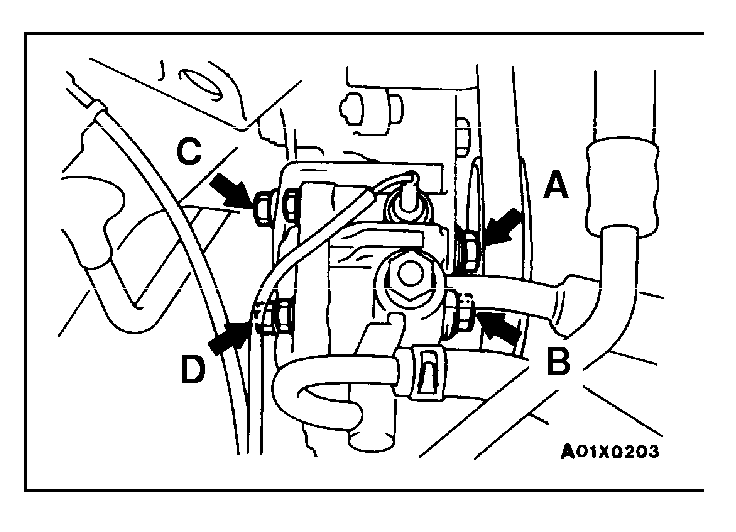

|

|
POWER STEERING PUMP DRIVE BELT TENSION
ADJUSTMENT
1.Loosen power steering pump fixing bolt (A, B, C, D).
2.Move power steering pump, tension belt moderately and adjust tension.
Standard value:
| Items |
When a new belt is
installed |
When a used belt is
installed |
Tension
N (lbs.) |
490 - 686
(110.2 - 154.3) |
343 - 441
(77.2 - 99.2) |
Deflection
mm (in.) |
4.5 - 5.5
(.18 - .22) |
6.0 - 7.0
(.24 - .28) |
|
3.Tighten fixing bolt (A).
Tightening torque: 28 Nm (21 ft lbs.)
4.Tighten the remaining fixing bolts (B, C and D).
Tightening torque:
Bolt B and D 28 Nm (21 ft.lbs.)
Bolt C 22 Nm (16 ft.lbs.)
5.Check the belt deflection amount and readjust if necessary.
Caution
This check should be carried out after turning the crankshaft one full rotation or more in the forward direction (to the right).
|
![[Previous]](https://mitsubishitechinfo.com/data/F24S/BUTTONS/fprevg.png)
![[Next]](https://mitsubishitechinfo.com/data/F24S/BUTTONS/fnextg.png)